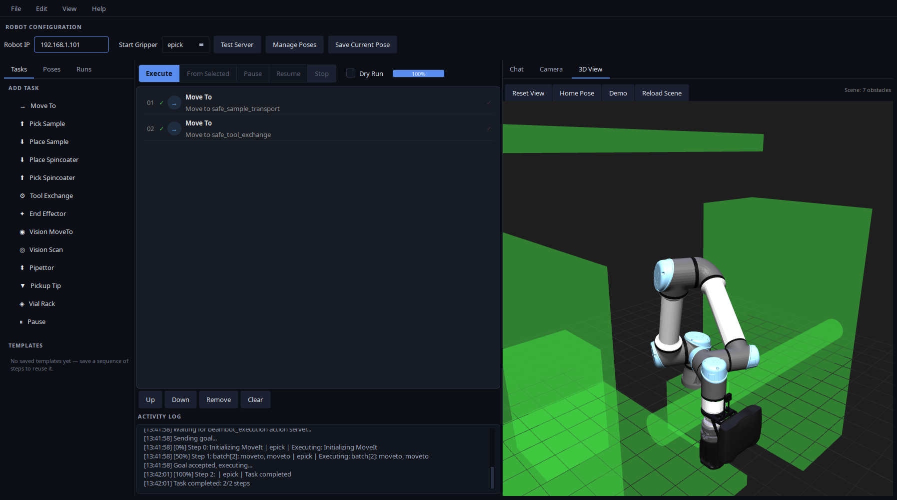
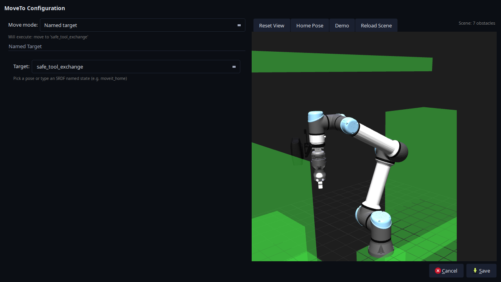

Operator GUI
Use the GUI to build task sequences, preview motion, and follow execution. It also displays saved poses, robot state, and camera images.
Open the GUI
Follow Run your first task to start a mock session. For an existing session, load the same workspace and set the same BEAMBOT_BEAMLINE_CONFIG as the orchestrator in your terminal, then run:
ros2 run mtc_gui mtc_gui_client
Press Test Server to check the connection. The result appears in the Activity Log. Chat is optional; missing chat credentials do not prevent manual task editing or execution.
{kind=link}

The GUI after the first-task demo with mock hardware. Open the full-resolution screenshot.
{kind=link}
Read the panels
Area |
Use it to |
|---|---|
Robot configuration |
Check the configured Robot IP and select Start Gripper. The IP is read-only. |
Tasks |
Add steps to the sequence. |
Poses |
Inspect saved joint positions and add named moves. |
Runs |
Save and load named task sequences. |
Sequence and controls |
Edit steps, start a run, and follow progress. |
3D View |
View the robot model, live joint positions, and planned trajectories. |
Camera |
View camera images and detection overlays. |
Chat |
Use experimental agent assistance; see agent integration. |
Activity Log |
Read connection messages, task feedback, results, and errors. |
The Camera panel retains its last image until another arrives. If it is blank, check that the camera is enabled, connected, and publishing.
Build a sequence
Load or add tasks. Use File → Load JSON, or click a task in the Tasks tab.
Check the starting tool. Set Start Gripper to the tool already attached. This setting does not attach or exchange a tool.
Edit a step. Double-click its row to enter its settings. Pause has no settings to edit.
Arrange the sequence. Use Up, Down, or drag-and-drop. Remove deletes selected steps; Clear removes all steps after confirmation.
Save your work. Use File → Save JSON or save a named sequence in Runs. Loading or saving a task does not execute it.
Use Edit → Copy and Edit → Paste to duplicate selected steps. Pasted steps appear after the selection, or at the end when nothing is selected.
For Move To, choose one target mode:
Mode |
Target |
|---|---|
Named target |
A saved pose or named robot state. |
Relative move |
A direction and distance in the flange frame. |
Cartesian target |
A position and optional orientation in the selected frame. |
Joint values |
Six arm joint angles in degrees. |
In Poses, single-click to inspect values; double-click or drag a pose into the sequence to add a named Move To. Saving in Joint values mode stores coordinates in the task, which take priority over the shared pose. See pose editing and overrides.
{kind=link}

The MoveTo editor showing safe_tool_exchange. Its pose display updates the view without planning or executing a movement. Open the full-resolution screenshot.
{kind=link}
Preview and execute
Select Dry Run and press Execute to plan a sequence. Preview supports only Move To and End Effector steps; a Pause, vision, tool-exchange, or pipettor step prevents previewing the whole sequence.
Inspect the planned motion in 3D View or RViz. Preview requires MoveIt and leaves the controller at its current position.
Clear Dry Run, then press Execute to run the sequence. Execution uses the real or mock hardware selected at launch.
Check the Activity Log for the result and completed-step count. A completed preview confirms planning only.
Generate a new preview after changing the scene or saved poses. 3D View displays the latest received trajectory; preview limits explains how multiple steps are planned and displayed.
A cached-plan replay failure can trigger fresh planning and repeat earlier steps. See cache behavior before relying on execution following the same trajectory as the preview.
Start from a selected step
Select one row, then press From Selected to submit that step and every following step. It uses the current Dry Run setting.
Earlier steps are skipped. Set Start Gripper to the current tool and confirm that any required sample handling or tool changes have already happened.
Pause, resume, and stop
Pause requests a pause after the active task or batch finishes. Resume continues a paused run.
Stop requests cancellation and waits for the server’s final result. If goal acceptance is still pending, the GUI waits for acceptance before sending the cancellation request. A stop handled before submission prevents the goal from being sent.
Check the Activity Log for the final outcome and completed-step count. A task can finish successfully before cancellation takes effect. Cancellation takes effect at task or batch boundaries; Stop is not an emergency stop.
Read execution controls for the full behavior and how to interpret the reported state.